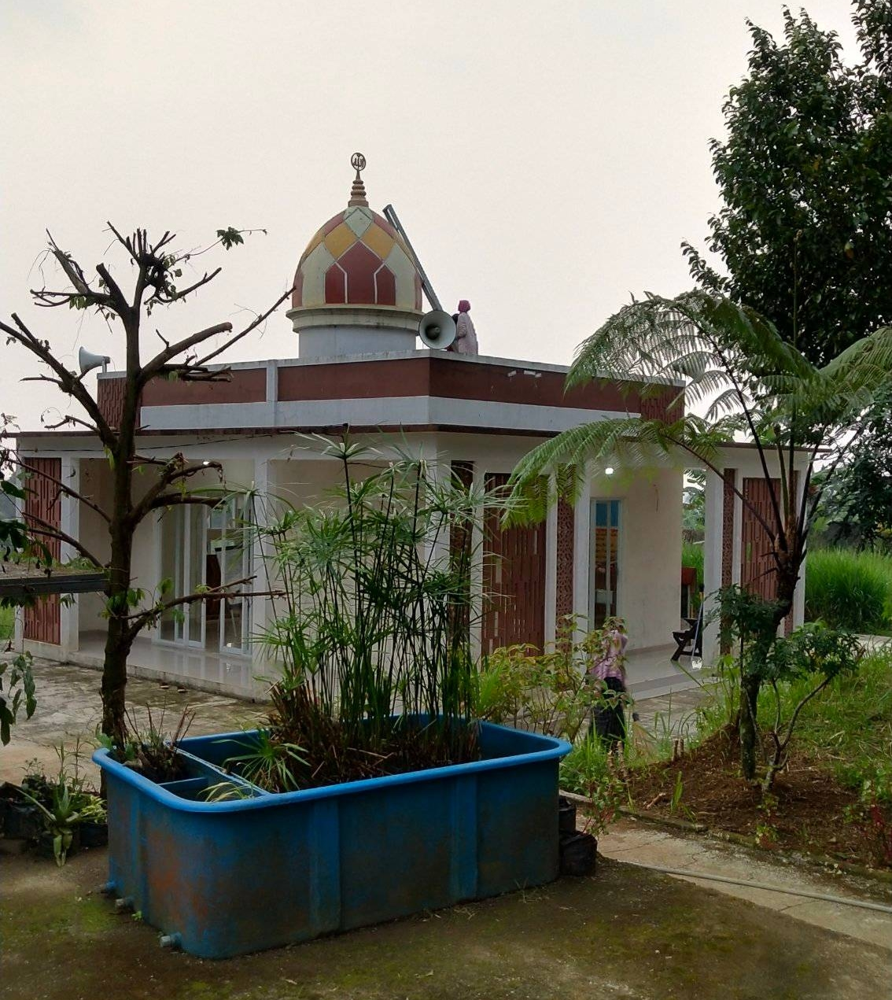
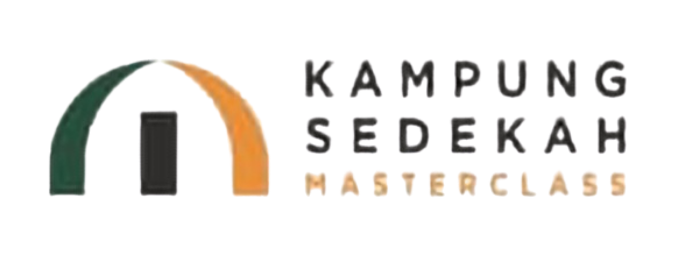
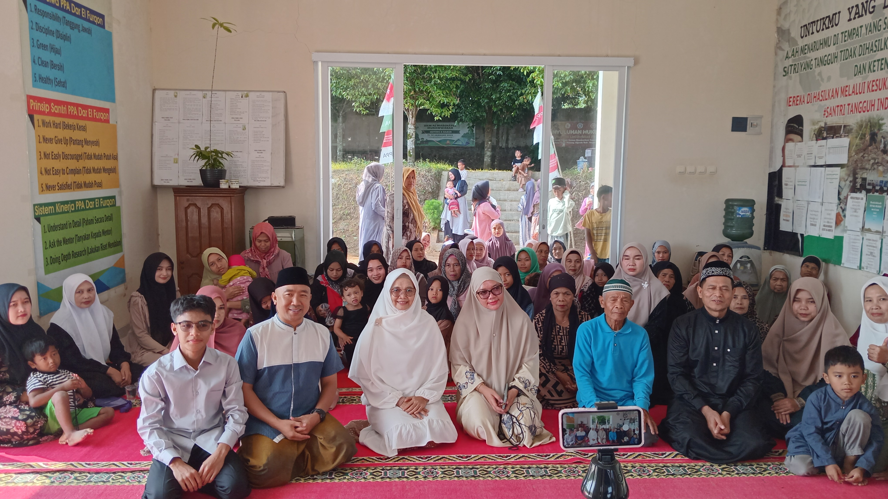
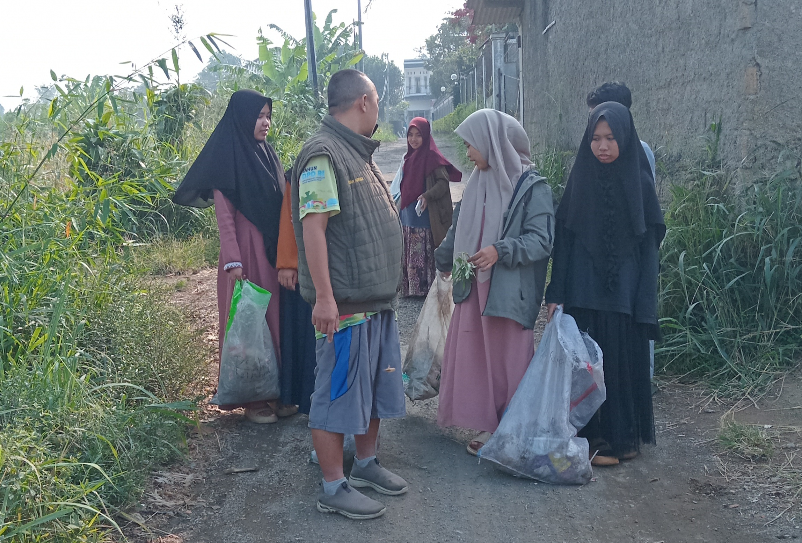
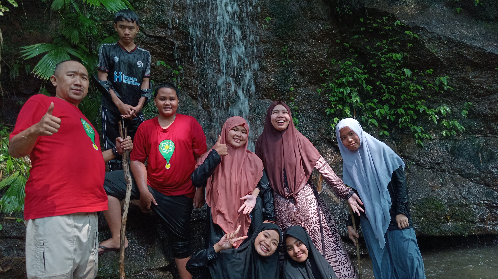
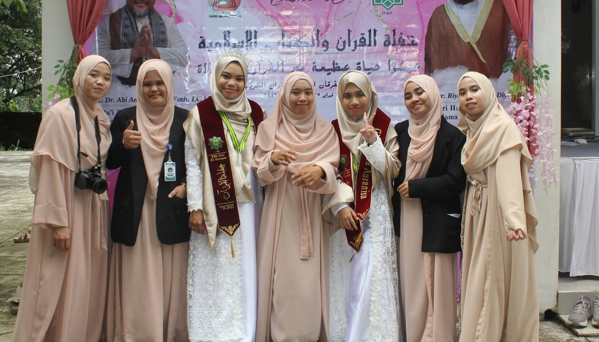

01 / Sedekah
Berbagi dengan tepat
Ruang untuk menyalurkan kepedulian dan membantu kebutuhan masyarakat di sekitar pondok.


Kampung Sedekah Dar El Furqon menghadirkan ruang berbagi, pemberdayaan, dan kepedulian agar manfaat pondok tumbuh bersama masyarakat.
Sebuah program sosial akan terasa hidup ketika ada orang, ide, dan tindakan nyata yang saling terhubung.
Ruang untuk menyalurkan kepedulian dan membantu kebutuhan masyarakat di sekitar pondok.
Menghidupkan semangat berbagi sekaligus membuka interaksi ekonomi yang lebih dekat dengan warga.
Membangun budaya gotong royong melalui kegiatan sosial, lingkungan, dan pendidikan.
Kebaikan tidak berhenti di satu orang. Ia berpindah, tumbuh, lalu kembali menjadi manfaat.
Kampung Sedekah Dar El Furqon merupakan bagian dari ekosistem kegiatan sosial yang terhubung dengan pondok. Program dirancang untuk memperluas manfaat pendidikan dan kepedulian kepada lingkungan sekitar.


Dari kegiatan sederhana, lahir rasa memiliki.
GEMES — Gerakan Memungut Sampah — menjadi salah satu contoh bagaimana aktivitas bersama dapat menjadi pengalaman belajar tentang kebersihan, tanggung jawab, dan kepedulian terhadap ruang hidup.
Lihat cerita lengkap
